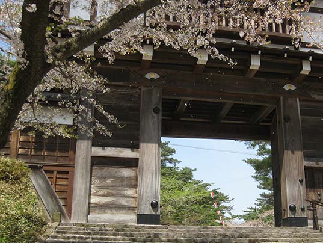
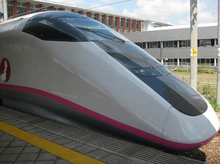

Budget Rejse
Overvejelser før Rejsen
Det at skulle planlægge en tur til den anden ende af verdenen for at besøge Japan kan virke som en uoverskuelig opgave. Der er mange forskellige måder at holde ferie på der også afhænger af hvilken tid på året det er. Så alt efter hvilken ferie du ønsker at holde, kan det være en god start at se hvilken tid på året du burde besøge Japan. Der er festiviteter og højtideligheder du kan besøge året rundt og i hele Japan. Årstiden er nemlig også vigtig for hvor billig du kan gøre din rejse.
Først lidt om Årstiderne i Japan
Forår
Japan er kendt for de store kontraster der er mellem de forskellige årstider. Om foråret er det meste af Japan dækket med lyserøde farver på grund af kirsebærblomsttræerne. Dette bliver også fejret af japanerne hvor der bliver holdt højtideligheder. Temperaturen på denne tid på året ligger som regel mellem 10 til 20 grader celsius. I slutningen af april og starten af maj holder japanerne en forårsferie, så hvis du vil afsted i denne periode kan det fordelsagtigt at bestille hotel, rejse mm. i god tid pga. øget trafik.
Sommer
Ligesom i Danmark er den Japanske sommer præget af grønne farver og temperaturer på over 20 grader, og desto længere syd på du tager desto varmere kan det blive. Denne tid på året er selvfølgelig perfekt til strand, sol og is, som denne del af året er kendt for.
Efterår
Efteråret er ofte overset til fordel for foråret og sommeren, men er mindst lige så smuk, hvis ikke smukkere, end de andre årstider. Denne årstid er præget af farver der strækker sig fra det røde til det gule farvespektrum. Temperaturen i denne periode daler igen til under 20 grader. Siden foråret er udenfor højsæson, kan rejsen gøres billig ved at rejse på dette tidspunkt.
Vinter
Vinteren er hvid i det meste af Japan, specielt den nordlige del hvor der er stort snefald. Siden Japan består af 70% bjerge er der masser af mulighed for at finde skisportssteder.
Logi
Hvis almindeligt hotelophold ligger over dit budget, så findes der også en lang række hostels eller kapsel hoteller til overkommelige priser.
Transport
Det ville næsten være synd at tage til Japan uden at prøve at køre i lyntog, men de er desværre ret dyre. Hvis du ikke skal rejse meget rundt i Japan, så kan det derfor betale sig at bruge natbusser som Willer travel. Hvis du til gengæld skal rejse meget rundt, så kan du med fordel bestille et JR Rail Pass der giver dig adgang til både lyntog og det lokale tognetværk. Det kan derfor betale sig på forhånd hvis du finder ud af hvor meget du forventer at rejse rundt, for at kunne finde den bedste løsning til netop din rejse.
Skræddersyet Rejse
Hvis du helt vil undgå at planlægge en rejse selv, kan du altid vælge et rejsebureau som Japan Specialisten. De tilbyder en lang række rejser i forskellige prisleje og omfang, så der er noget til enhver smag.